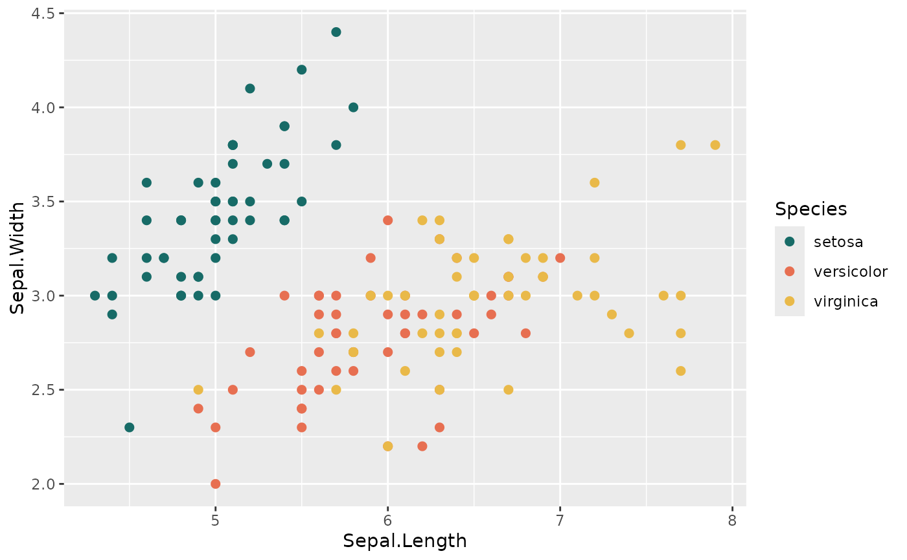

When discrete is NULL, categorical palettes use a discrete scale and
sequential/diverging palettes use a continuous gradient.
Usage
scale_colour_ggpalette(
name = "meadow",
discrete = NULL,
binned = FALSE,
alpha = 1,
direction = 1,
space = c("Lab", "rgb"),
...
)
scale_color_ggpalette(
name = "meadow",
discrete = NULL,
binned = FALSE,
alpha = 1,
direction = 1,
space = c("Lab", "rgb"),
...
)
scale_fill_ggpalette(
name = "meadow",
discrete = NULL,
binned = FALSE,
alpha = 1,
direction = 1,
space = c("Lab", "rgb"),
...
)Examples
library(ggplot2)
ggplot(iris, aes(Sepal.Length, Sepal.Width, colour = Species)) +
geom_point(size = 2) +
scale_colour_ggpalette("meadow")
